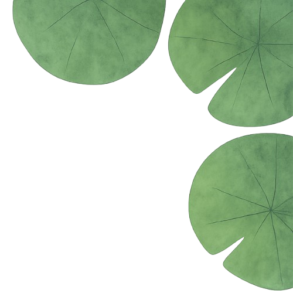
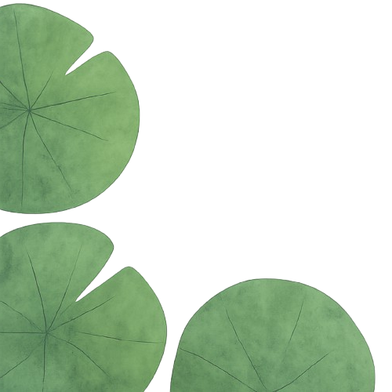
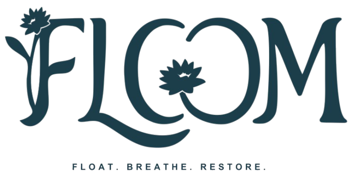
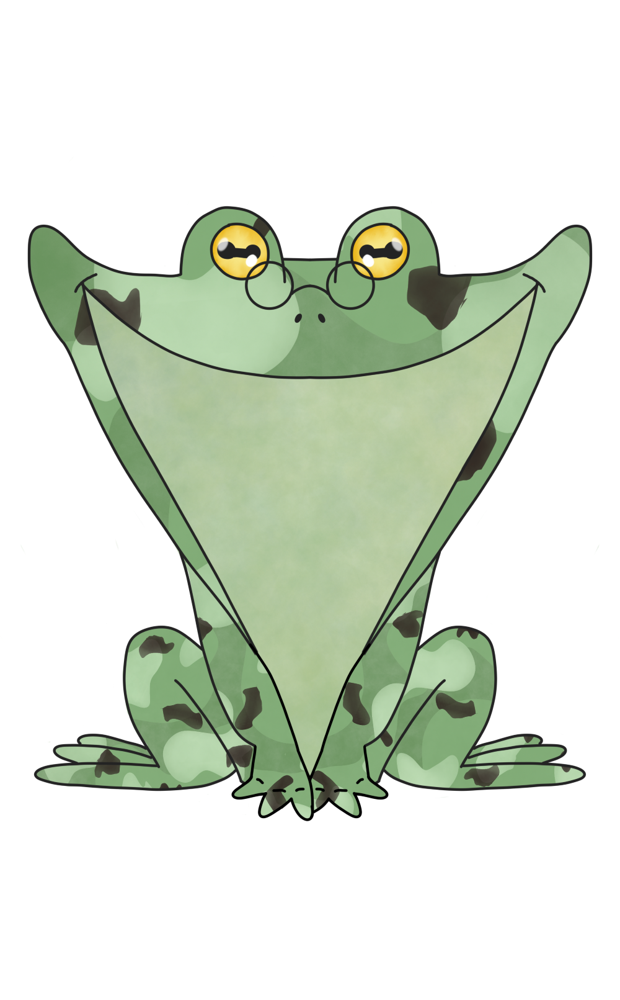

Since 20--, the Bassin de la Muette has been suffering from toxic algae proliferation.
Aquatic life struggles due to oxygen depletion and reduced light penetration.
Floom monitors the lake in real time to restore ecological balance.
Today the water quality is still too low, but improvements are already in motion!.

Current temperature: --
Current turbidity: --
Current pH: --
Current conductivity: --